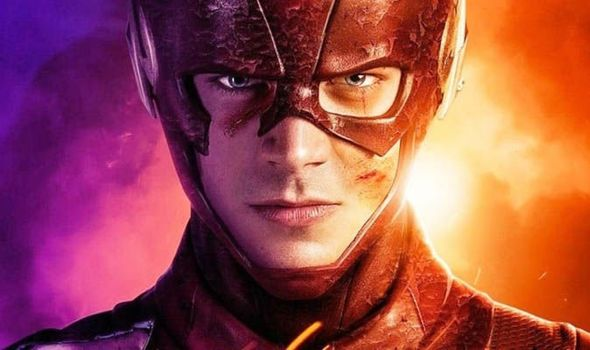
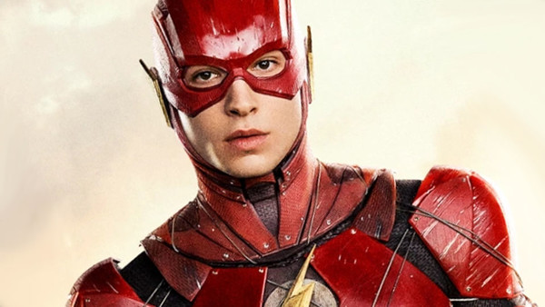
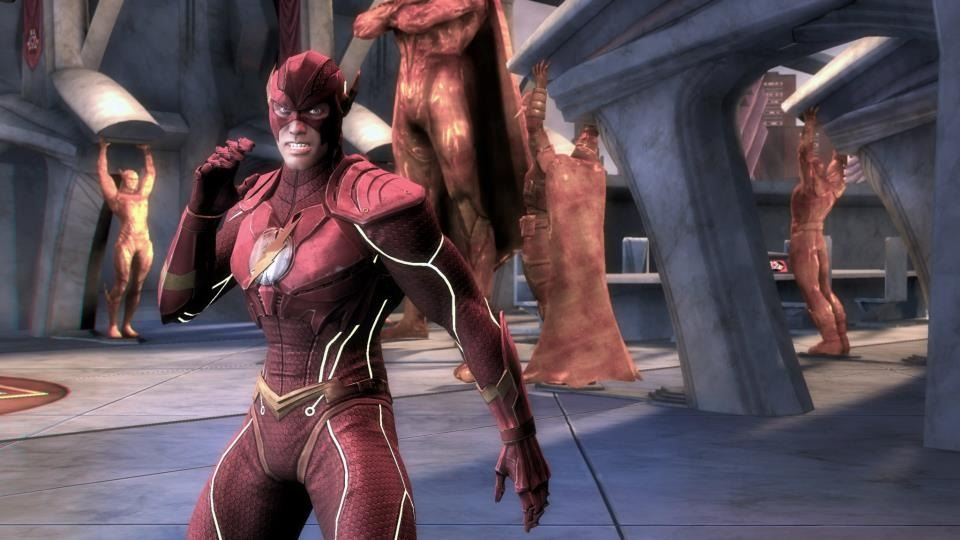
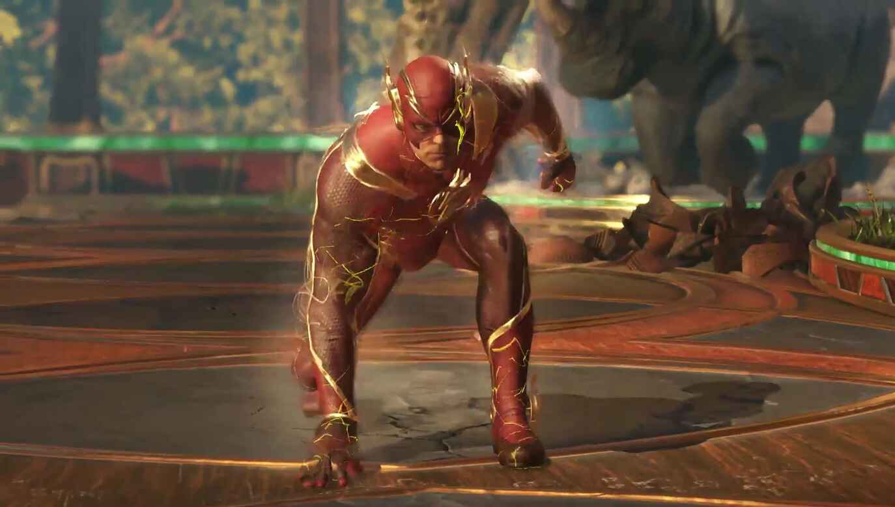

Why The Flash?
This may be a great question if you don't already know The Flash. The Flash is another superhero who can help the Justice League to save the humanity. This superhero is the one who has the fastest speed and has the ability to travel through time and space and is the one who has changed the timeline a couple of times. Once he was tricked by his nemesis Eobard Thawn and changed the timeline based on what he wanted. Barry Alan, or the Flash had lost his parents in a home robery accident. So he went back through time in order to be able to save his parents. As a result he saved his parents, but it had a lot of consequences. So he had to change the timeline again but this time he encountered too many different problems.
The story of the dawn of the flash goes to when he was a detective and gained his power when a lighting bolt hit him and he was around lots of chemicals. after that accident he could run faster than light speed.
Becoming the Fastest Man Alive
After getting hit by a lighting bolt, he was surprisingly fast. He had to help people using his powers. This would lead him to become the flash. The one to save planet a multipletimes.
Some Games and Movies about this Character



For more information click HERE